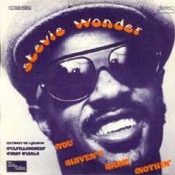

Fulfillingness' First Finale es el primer álbum que realiza después del accidente de tráfico que lo mantuvo en coma, y vuelve con un marcado toque religioso y espiritual como se refleja en "They Don't Go When I Go" o "Heaven Is Ten Million Light Years Away". Canciones llenas de vivencias trascendentales y próximos al gospel de sus años de infancia en la parroquia.
Aún así, mantiene la vitalidad en temas como "Boogie On Reggae Woman", declaración acerca de sus gustos sobre el sexo, y "You Haven't Don't Nothing", donde contribuye con fina ironía y acidez al vapuleo de aquella época sobre Nixon. Los invitados en este disco son escasos, pero excelentes, apenas se limitan a hacer coros, como los Jackson Five en "You haven't don't nothing", Deniece Williams en "Smile Please", Paul Anka o Minnie Riperton. El disco salió al mercado el 22 de julio de 1974, y tuvo una aceptación excelente incluso antes de salir a la venta. El accidente le había ayudado a estar en un estado de éxito continuo, ademas de los Grammys cosechados el año anterior.
Grammys que de nuevo volvió a hacer suyos. Consiguió 4 premios Grammy, entre ellos el de mejor interpretación R&B masculina por "Boogie On Reggae Woman", y al de mejor álbum, convirtiéndolo de nuevo en todo un hito, pues si el año anterior fue la primera persona de color en recibir dicho galardón, este iba a ser su segundo año consecutivo. Todo un honor que sumar a su palmarés. El hecho de que Wonder se tomara un descanso de dos años para grabar su siguiente álbum -Songs in the Key of Life- interrumpió su increíble cascada de acaparación de premios Grammys, provocando la famosa declaración de Paul Simon agradeciendo públicamente a Wonder no haber publicado un álbum en 1975 cuando éste recibió el Grammy al mejor disco del año por "Still Crazy After All These Years".

